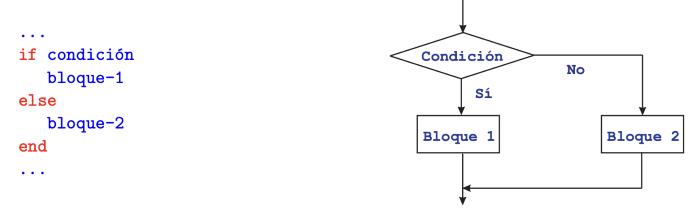

Día 3: Tomando Decisiones - Lógica y Condicionales
Hasta ahora, nuestros programas se ejecutan línea por línea, siempre de la misma forma. Hoy aprenderemos a darles "inteligencia" usando condicionales, para que puedan tomar decisiones y seguir diferentes caminos.
La Estructura `if / else`
El condicional if (si) evalúa si una
condición es verdadera. Si lo es, ejecuta un bloque de
código. Opcionalmente, puedes añadir un
else (si no) para ejecutar otro bloque de
código si la condición es falsa.
int edad = 20;
if (edad >= 18) {
System.out.println("Eres mayor de edad. Puedes pasar.");
} else {
System.out.println("Eres menor de edad. No puedes pasar.");
}Operadores de Comparación
Para crear condiciones, usamos operadores que comparan valores:
==: Igual a!=: Diferente de>: Mayor que<: Menor que>=: Mayor o igual que<=: Menor o igual que
Mini-Proyecto del Día
Escribe un programa que tome una variable numérica que represente la calificación de un examen (de 0 a 10). El programa debe imprimir:
- "Excelente" si la nota es 9 o 10.
- "Bueno" si la nota está entre 7 y 8.
- "Necesita mejorar" si la nota es 6 o menos.
Pista:
¡Necesitarás usar if,
else if y else!